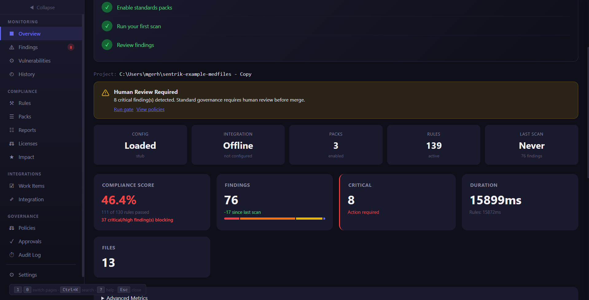
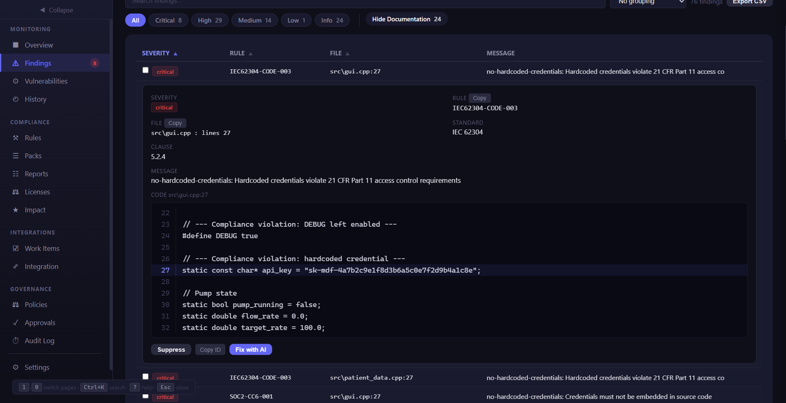
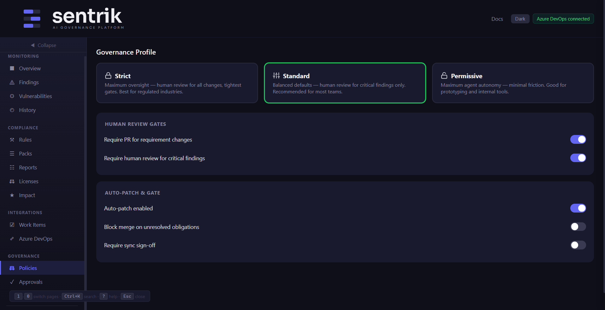
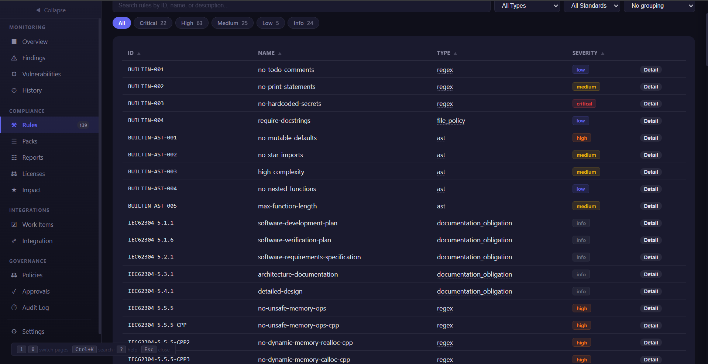
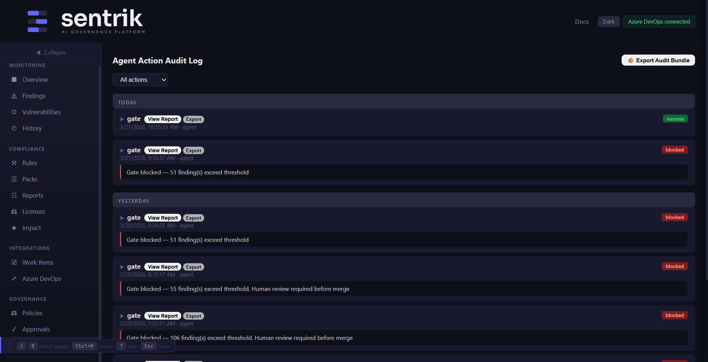
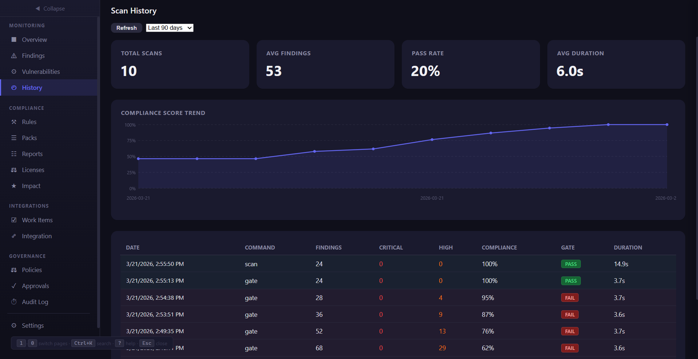
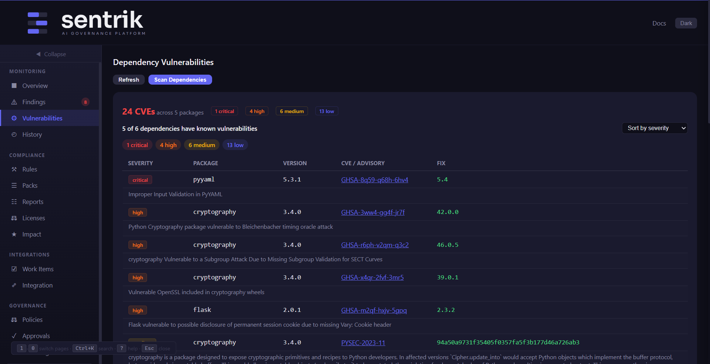
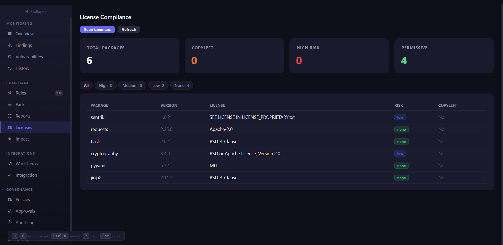
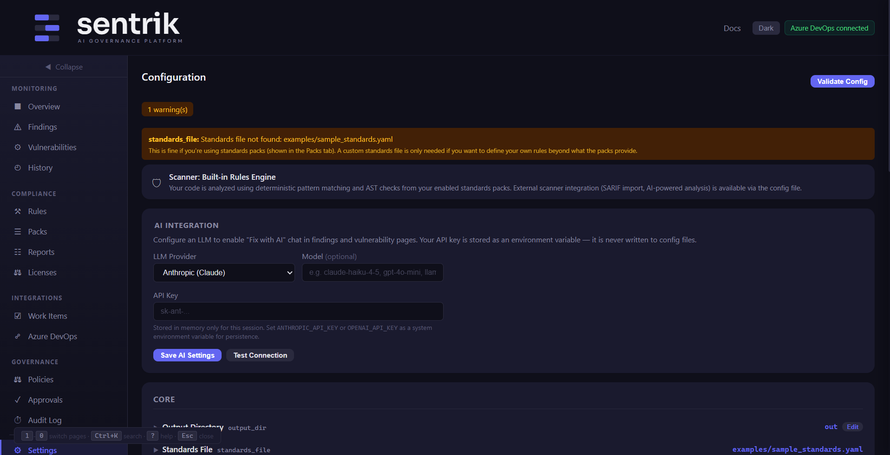

Dashboard Guide¶
The sentrik dashboard is a web-based management console providing real-time visibility into scan findings, governance policies, DevOps integration, and compliance status.
Getting started¶
Start the API server:
Open http://localhost:8000/dashboard in your browser.
Onboarding wizard¶
On first visit, an onboarding panel guides you through setup:
- Configure DevOps — Connect to Azure DevOps, GitHub, or Jira
- Enable standards packs — Activate compliance rule packs
- Run your first scan — Execute an initial scan
- Review findings — Inspect scan results
Dismiss the panel at any time — it won't appear again.
Tabs¶
Overview (Shortcut: 1)¶
Home screen showing project health:
- Action buttons — Run Scan, Run Gate, Run Context
- Health grid — Config status, DevOps provider, packs enabled, last scan
- Metrics cards — Finding counts by severity
- Donut chart — Severity distribution
- Trends — Finding counts over time (from scan history). Click legend items to toggle individual severity lines on or off (e.g., show only critical and high trends).

Findings (Shortcut: 2)¶
All scan results with filtering, sorting, and detail expansion.
- Search — Filter by rule ID, file path, or message
- Severity filter pills — Click severity badges to filter by one or more severity levels. An active-filter banner shows which filters are applied and offers a "Clear" button.
- Bulk selection — Use the header checkbox to select/deselect all visible findings
- Sortable columns — Severity, Rule, File, Message
- Detail panel — Click any row for code context, suggested fix, auto-fix status
- Fix with AI — Click "Fix with AI" on any finding detail to open an AI chat panel. The LLM receives the full context: code snippet, rule definition, standard, and remediation guidance. Chat back and forth to understand the issue, explore fixes, and apply them. Code blocks in AI responses include "Apply Fix" buttons to patch the code directly. Requires
GUARD_LLM_PROVIDERto be configured (anthropic,openai, orollama) along with the corresponding API key (ANTHROPIC_API_KEY,OPENAI_API_KEY, etc.). This is separate from the MCP integration — MCP is for AI coding tools calling Sentrik during development, while Dashboard AI Chat is for compliance teams triaging findings in the browser. - Export CSV — Download findings as CSV
- Suppress — Silence specific rule/file combinations

Reports (Shortcut: 3)¶
Generate and download reports: HTML, JUnit XML, or SARIF.
Policies (Shortcut: 4)¶
Configure governance profile and human review gates:
- Profiles — Strict, Standard, Permissive
- Human review gates — On requirement change, on critical finding
- Gate controls — Auto-patch, block merge, require sign-off

Packs (Shortcut: 5)¶
Manage standards packs — enable/disable, edit rule overrides, create custom packs, import/export.
Rules (Shortcut: 6)¶
Browse all active rules with search and filtering:
- Filter by severity, type, or standard — Dropdown filters to narrow the rule list
- Group by standard, type, or severity — Organize rules into collapsible groups
- Sortable columns — Click column headers to sort by any field
- Rule count — Total active rules displayed in the tab header

Work Items (Shortcut: 7)¶
Track DevOps work items linked to findings:
- Refresh — Reload from DevOps provider
- Check Coverage — Find untracked source files
- Generate Requirements — Auto-generate draft requirements
- Sync to DevOps — Reconcile with dry-run preview
Integration (Shortcut: 8)¶
Connect to Azure DevOps, GitHub, or Jira. Test connection and save configuration.
Audit (Shortcut: 9)¶
Timeline of all sentrik actions (scan, gate, reconcile, config changes).

Approvals (Enterprise)¶
Review and resolve async approval requests when gate checks fail.
History¶
Browse historical scan runs and generate reports from past scans. Each entry shows the run ID, timestamp, and finding counts. Click "View Report" to generate a compliance report from archived findings.

Vulnerabilities¶
View dependency vulnerabilities discovered by sentrik vulns. Shows CVE ID, severity, affected package, installed version, and fixed version. Use --fix to auto-remediate.

Licenses¶
Dependency license compliance results from sentrik licenses. Flags copyleft licenses, unknown licenses, and license conflicts. Filterable by license type and risk level.

Quality Score¶
View your project's code quality score (0-100) across six weighted dimensions: compliance, complexity, test coverage, documentation, consistency, and dependency health. Includes a score ring visualization, per-dimension breakdown with progress bars, and a historical trend chart. Run sentrik quality-score to generate data.
Project Profile¶
Auto-detected project profile showing languages, frameworks, architecture patterns, naming conventions, and a module map with file counts. Run sentrik profile to build or refresh the profile.
Design Decisions¶
Browse LLM-identified design decisions with category badges, risk descriptions, alternatives, and acknowledgement status. Click Acknowledge to mark a decision as reviewed with an optional note. A sidebar badge shows the count of pending decisions. Run sentrik review-design --file <path> to generate decisions.
Expertise¶
Developer expertise profiles built from git history. Shows per-developer language expertise percentages and module activity bar charts. Run sentrik check-expertise --profile to build profiles.
Threat Model¶
STRIDE-based threat model with filtering and AI chat. Shows threats identified by sentrik threat-model with severity pills (critical/high/medium/low), STRIDE category dropdown, status filter (mitigated/unmitigated), and search. Each unmitigated threat has a "Fix with AI" button that opens the AI chat panel with the full threat context (description, attack vector, impact, suggested mitigation) and a "Mark Mitigated" button. Run sentrik threat-model --file <path> to generate a threat model.
Attestation¶
View the latest compliance attestation including gate pass/fail status, findings count, files scanned, rules evaluated, scan duration, design review status, and the cryptographic signature. Run sentrik attest to generate an attestation.
Settings (Shortcut: 0)¶
View and validate configuration. The AI Integration card lets you configure an LLM provider (Anthropic, OpenAI, or Ollama) directly from the dashboard — select a provider, paste your API key, and click Save. Use "Test Connection" to verify it works. The API key is stored in memory only (never written to config files).

Keyboard shortcuts¶
| Shortcut | Action |
|---|---|
1 – 9 |
Switch to tabs 1–9 |
0 |
Settings tab |
Ctrl+K or / |
Global search |
? |
Help overlay |
Esc |
Close modal/overlay |
S |
Run Scan |
G |
Run Gate |
Theme toggle¶
Click Dark / Light in the header. Preference saved in localStorage.
Troubleshooting¶
- Dashboard won't load — Verify
sentrik dashboardis running and port 8000 is accessible - No findings — Check that
.guard.yamlexists and at least one pack is enabled - DevOps connection fails — Verify environment variables (
AZURE_DEVOPS_PAT,GITHUB_TOKEN, etc.) - Responsive issues — Best experience at 1024px+ width; adapts at 768px and 480px breakpoints